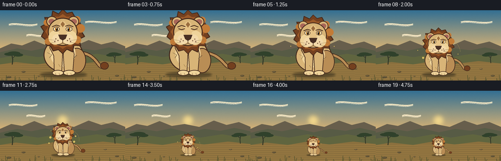
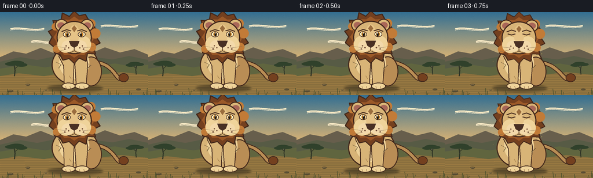

CODING AGENTS AS PIXEL WORLD MODELS
traex/GPT-5.6-Sol · instance_preservation_0052
点击播放 · 原生 RGB 像素
逐轮保存的候选
回放视频、检查图与代码变化。
每份候选均可单独播放。实际图片检查记录在下方工具轨迹中。
候选 01播放与检查图
点击播放 · 原生 RGB 像素


展开代码变化
--- 上一保存版本
+++ 本次保存版本
@@ -0,0 +1,307 @@
+from pathlib import Path
+import math
+import numpy as np
+from PIL import Image, ImageDraw, ImageFilter
+
+import artifact_io
+
+
+# A small, hand-drawn storybook animation. Everything is rendered at 3x and
+# downsampled so that even the final, very small lion keeps a recognizable face.
+W, H, N = 256, 144, 20
+SS = 3
+SW, SH = W * SS, H * SS
+ROOT = Path(__file__).resolve().parent
+
+
+def sc(v):
+ return int(round(v * SS))
+
+
+def rgb(hex_string, alpha=255):
+ h = hex_string.lstrip("#")
+ return tuple(int(h[i:i + 2], 16) for i in (0, 2, 4)) + (alpha,)
+
+
+def smoothstep(x):
+ x = min(1.0, max(0.0, x))
+ return x * x * (3.0 - 2.0 * x)
+
+
+def poly(draw, points, fill, outline=None, width=1):
+ p = [(sc(x), sc(y)) for x, y in points]
+ draw.polygon(p, fill=fill)
+ if outline:
+ draw.line(p + [p[0]], fill=outline, width=sc(width), joint="curve")
+
+
+def line(draw, points, fill, width=1):
+ draw.line([(sc(x), sc(y)) for x, y in points], fill=fill,
+ width=max(1, sc(width)), joint="curve")
+
+
+def ellipse(draw, box, fill, outline=None, width=1):
+ x0, y0, x1, y1 = box
+ b = (sc(min(x0, x1)), sc(min(y0, y1)), sc(max(x0, x1)), sc(max(y0, y1)))
+ draw.ellipse(b, fill=fill, outline=outline, width=max(1, sc(width)))
+
+
+def cubic(p0, p1, p2, p3, steps=30):
+ result = []
+ for t in np.linspace(0, 1, steps):
+ u = 1 - t
+ result.append((u**3*p0[0] + 3*u*u*t*p1[0] + 3*u*t*t*p2[0] + t**3*p3[0],
+ u**3*p0[1] + 3*u*u*t*p1[1] + 3*u*t*t*p2[1] + t**3*p3[1]))
+ return result
+
+
+def make_background():
+ """Paint a calm dawn savanna with a clear central stage."""
+ rng = np.random.default_rng(31)
+ yy = np.linspace(0, 1, SH)[:, None, None]
+ top = np.array([51, 111, 146], dtype=float)[None, None, :]
+ middle = np.array([244, 190, 112], dtype=float)[None, None, :]
+ bottom = np.array([225, 151, 71], dtype=float)[None, None, :]
+ q = np.clip(yy / .65, 0, 1)
+ sky = top * (1-q) + middle * q
+ q2 = np.clip((yy-.65)/.35, 0, 1)
+ arr = sky * (1-q2) + bottom * q2
+ arr = np.repeat(arr, SW, axis=1)
+ noise = rng.normal(0, 1.5, (SH, SW, 1))
+ arr = np.clip(arr + noise, 0, 255).astype(np.uint8)
+ im = Image.fromarray(arr, "RGB").convert("RGBA")
+ d = ImageDraw.Draw(im, "RGBA")
+
+ # Soft sun and illuminated haze behind the subject.
+ glow = Image.new("RGBA", (SW, SH), (0, 0, 0, 0))
+ gd = ImageDraw.Draw(glow, "RGBA")
+ for r in range(29, 4, -2):
+ a = int(3 + (30-r) * .45)
+ ellipse(gd, (128-r, 61-r, 128+r, 61+r), (255, 223, 135, a))
+ ellipse(gd, (118, 51, 138, 71), (255, 226, 144, 205))
+ glow = glow.filter(ImageFilter.GaussianBlur(sc(4)))
+ im = Image.alpha_composite(im, glow)
+ d = ImageDraw.Draw(im, "RGBA")
+
+ # Wispy clouds.
+ for x, y, span, a in [(18, 29, 58, 42), (174, 24, 64, 36), (54, 51, 38, 28)]:
+ pts = cubic((x, y), (x+span*.28, y-5), (x+span*.68, y+5), (x+span, y-1), 34)
+ line(d, pts, (250, 233, 196, a), 2.2)
+ line(d, [(px, py+2.2) for px, py in pts], (255, 240, 208, a//2), 1.1)
+
+ # Layered mesas and hills.
+ poly(d, [(0, 78), (23, 68), (45, 72), (70, 62), (95, 72), (121, 68),
+ (151, 74), (181, 61), (207, 70), (232, 64), (256, 74), (256, 104), (0, 104)],
+ (103, 94, 76, 125))
+ poly(d, [(0, 86), (35, 78), (64, 83), (93, 77), (129, 85), (162, 78),
+ (194, 82), (223, 76), (256, 83), (256, 111), (0, 111)],
+ (87, 91, 69, 185))
+ poly(d, [(0, 98), (44, 91), (78, 96), (117, 89), (153, 96), (198, 89),
+ (232, 95), (256, 91), (256, 144), (0, 144)], (96, 101, 63, 255))
+ # Foreground earth, with a subtle center spotlight.
+ poly(d, [(0, 111), (32, 106), (76, 111), (116, 104), (161, 110), (210, 104),
+ (256, 109), (256, 144), (0, 144)], (139, 112, 62, 255))
+ for y in range(112, 145, 4):
+ a = max(10, 34 - (y-112)//2)
+ line(d, [(0, y), (256, y-2)], (196, 149, 77, a), .65)
+
+ # Acacia silhouettes frame the action without crowding the lion.
+ def tree(x, base, size, flip=1):
+ trunk = [(x, base), (x+1.2*flip*size, base-13*size),
+ (x-1.0*flip*size, base-25*size)]
+ line(d, trunk, (49, 54, 39, 235), 2.5*size)
+ line(d, [(x+.1*size*flip, base-16*size), (x+9*size*flip, base-24*size)],
+ (49, 54, 39, 230), 1.6*size)
+ for cx, cy, rx, ry in [(-7, -27, 14, 4), (4, -29, 17, 5), (15, -25, 13, 4)]:
+ ellipse(d, (x+(cx-rx)*size*flip, base+(cy-ry)*size,
+ x+(cx+rx)*size*flip, base+(cy+ry)*size), (48, 65, 43, 225))
+ tree(25, 111, .78, 1)
+ tree(235, 108, .64, -1)
+
+ # Fixed scattered stones add scale cues.
+ for x, y, rx in [(48, 126, 4), (215, 120, 3), (18, 137, 5), (239, 134, 4), (79, 135, 2)]:
+ ellipse(d, (x-rx, y-rx*.42, x+rx, y+rx*.42), (88, 76, 51, 145))
+ line(d, [(x-rx*.7, y-rx*.2), (x+rx*.45, y-rx*.27)], (205, 163, 95, 80), .6)
+ return im
+
+
+BACKGROUND = make_background()
+
+
+def local_points(points, cx, ground, scale):
+ return [(cx + x*scale, ground + y*scale) for x, y in points]
+
+
+def draw_lion(canvas, cx, ground, size, frame):
+ """Draw the same distinctive seated lion at an arbitrary scale."""
+ layer = Image.new("RGBA", canvas.size, (0, 0, 0, 0))
+ d = ImageDraw.Draw(layer, "RGBA")
+ s = size
+ def P(points): return local_points(points, cx, ground, s)
+ def E(box, fill, outline=None, width=1):
+ ellipse(d, (cx+box[0]*s, ground+box[1]*s, cx+box[2]*s, ground+box[3]*s),
+ fill, outline, max(.35, width*s))
+ def L(points, fill, width=1): line(d, P(points), fill, max(.35, width*s))
+ def G(points, fill, outline=None, width=1): poly(d, P(points), fill, outline, max(.35, width*s))
+
+ outline = rgb("#43291c", 255)
+ mane_dark = rgb("#74401f", 255)
+ mane = rgb("#9b5928", 255)
+ mane_light = rgb("#c27b37", 255)
+ fur = rgb("#d8b477", 255)
+ fur_light = rgb("#efd39a", 255)
+ fur_shadow = rgb("#b98d55", 255)
+
+ # Tail behind the body, gently swishing while retaining its exact markings.
+ swish = math.sin(frame * .52) * 4.2
+ tail_curve = cubic((32, -42), (67, -39), (67+swish, -8), (78+swish, -16), 27)
+ L(tail_curve, outline, 7.2)
+ L(tail_curve, fur_shadow, 4.7)
+ E((71+swish, -24, 87+swish, -10), mane_dark, outline, 1.2)
+
+ # Body, rump, legs and paws.
+ E((-36, -70, 39, -5), fur, outline, 1.8)
+ E((10, -51, 44, -3), fur_shadow, outline, 1.5)
+ # Belly light and chest bib.
+ E((-24, -66, 24, -15), fur_light, None)
+ G([(-25, -52), (-17, -36), (-16, -5), (-2, -3), (0, -40), (-8, -59)],
+ fur, outline, 1.3)
+ G([(4, -57), (1, -38), (3, -4), (19, -3), (22, -39), (18, -57)],
+ fur, outline, 1.3)
+ E((-20, -9, 2, 2), fur_light, outline, 1.2)
+ E((1, -9, 24, 2), fur_light, outline, 1.2)
+ # Toes remain visible in the small version.
+ for x in (-14, -7, 8, 15):
+ L([(x, -3), (x+1, .2)], rgb("#8b6540", 210), .7)
+
+ # Shaggy, asymmetric mane. The fixed alternating radii are an identity cue.
+ mane_pts = []
+ count = 28
+ for i in range(count):
+ a = -math.pi/2 + i * 2*math.pi/count
+ r = (42 if i % 2 == 0 else 35) * (1 + .035*math.sin(i*2.7))
+ mane_pts.append((math.cos(a)*r, -82 + math.sin(a)*r))
+ G(mane_pts, mane_dark, outline, 1.7)
+ inner_pts = []
+ for i in range(24):
+ a = -math.pi/2 + i * 2*math.pi/24
+ r = 33 if i % 2 == 0 else 29
+ inner_pts.append((math.cos(a)*r, -82 + math.sin(a)*r))
+ G(inner_pts, mane, None)
+ # Mane's sunlit right curls.
+ for x, y, r in [(27, -104, 7), (34, -88, 8), (28, -66, 7), (-28, -63, 6), (-30, -99, 6)]:
+ E((x-r, y-r, x+r, y+r), mane_light, None)
+
+ # Ears tucked into the mane.
+ E((-31, -111, -10, -91), fur, outline, 1.5)
+ E((10, -111, 31, -91), fur, outline, 1.5)
+ E((-27, -106, -15, -96), rgb("#a96758"), None)
+ E((15, -106, 27, -96), rgb("#a96758"), None)
+
+ # Face and cheeks.
+ E((-28, -108, 28, -55), fur, outline, 1.8)
+ E((-27, -84, -1, -57), fur_light, None)
+ E((1, -84, 27, -57), fur_light, None)
+ # Warm bridge and the distinctive diamond forehead mark.
+ E((-8, -102, 8, -71), rgb("#e6c387"), None)
+ G([(0, -101), (4, -96), (0, -90), (-4, -96)], rgb("#9a6d3e"), None)
+
+ # Brows, eyes, amber irises, and pin-point catchlights.
+ L([(-20, -91), (-12, -94), (-5, -92)], outline, 1.6)
+ L([(5, -92), (12, -94), (20, -91)], outline, 1.6)
+ # A quick natural blink early and late, not during the key scale comparison.
+ blink = frame in (3, 16)
+ if blink:
+ L([(-18, -88), (-12, -86), (-6, -88)], outline, 1.5)
+ L([(6, -88), (12, -86), (18, -88)], outline, 1.5)
+ else:
+ E((-18, -91, -6, -82), rgb("#fff0c6"), outline, .9)
+ E((6, -91, 18, -82), rgb("#fff0c6"), outline, .9)
+ E((-14.5, -90, -8.5, -83), rgb("#c47c21"), None)
+ E((8.5, -90, 14.5, -83), rgb("#c47c21"), None)
+ E((-12.5, -89.5, -9.5, -83), rgb("#201c18"), None)
+ E((9.5, -89.5, 12.5, -83), rgb("#201c18"), None)
+ E((-12.4, -89.4, -10.7, -87.7), rgb("#ffffff"), None)
+ E((9.6, -89.4, 11.3, -87.7), rgb("#ffffff"), None)
+
+ # Muzzle, nose, smile and whisker freckles.
+ E((-20, -77, 1, -59), rgb("#f3d9aa"), None)
+ E((-1, -77, 20, -59), rgb("#f3d9aa"), None)
+ G([(-8, -76), (8, -76), (5, -68), (0, -65), (-5, -68)], rgb("#493024"), outline, .7)
+ L([(0, -65), (0, -60), (-7, -57)], outline, 1.05)
+ L([(0, -60), (7, -57)], outline, 1.05)
+ for x, y in [(-13,-68), (-9,-65), (-15,-63), (13,-68), (9,-65), (15,-63)]:
+ E((x-1, y-1, x+1, y+1), rgb("#76523a"), None)
+ L([(-13, -65), (-31, -67)], rgb("#5f4635", 175), .55)
+ L([(-13, -62), (-30, -59)], rgb("#5f4635", 175), .55)
+ L([(13, -65), (31, -67)], rgb("#5f4635", 175), .55)
+ L([(13, -62), (30, -59)], rgb("#5f4635", 175), .55)
+
+ # Sparse fur contour strokes, always in the same locations.
+ L([(-29, -42), (-21, -38), (-25, -32)], rgb("#9f764a", 140), .8)
+ L([(27, -37), (20, -31)], rgb("#8d643d", 130), .8)
+ L([(-8, -20), (-5, -15)], rgb("#a77d4d", 120), .7)
+
+ canvas.alpha_composite(layer)
+
+
+def draw_foreground_grass(im, frame):
+ d = ImageDraw.Draw(im, "RGBA")
+ # deterministic tufts. Their subtle sway supplies life while the camera stays locked.
+ for i, x in enumerate([4, 12, 30, 39, 60, 71, 91, 104, 154, 169, 188, 202, 224, 247, 253]):
+ h = 4 + (i * 7 % 9)
+ sway = math.sin(frame*.30 + i) * 1.2
+ col = (50, 66, 38, 170 if x < 100 or x > 155 else 90)
+ line(d, [(x, 144), (x+sway, 144-h)], col, .7)
+ line(d, [(x+2, 144), (x+3-sway*.5, 146-h*.8)], col, .65)
+
+
+def render_frame(frame):
+ im = BACKGROUND.copy()
+ # Scale is held briefly at both ends, with a smooth unmistakable shrink in between.
+ progress = smoothstep((frame - 2) / 14.0)
+ size = 1.08 + (0.32 - 1.08) * progress
+ cx, ground = 128, 132
+
+ # Contact shadow contracts with the lion, proving the subject itself changes size.
+ shadow = Image.new("RGBA", im.size, (0, 0, 0, 0))
+ sd = ImageDraw.Draw(shadow, "RGBA")
+ ellipse(sd, (cx-42*size, ground-5*size, cx+45*size, ground+5*size), (38, 34, 24, 120))
+ shadow = shadow.filter(ImageFilter.GaussianBlur(sc(max(.6, 2.0*size))))
+ im = Image.alpha_composite(im, shadow)
+
+ # Golden motes orbit only during the transformation; they read as shrink magic,
+ # not additional creatures.
+ if 3 <= frame <= 16:
+ magic = Image.new("RGBA", im.size, (0, 0, 0, 0))
+ md = ImageDraw.Draw(magic, "RGBA")
+ strength = math.sin(math.pi * (frame-3) / 13)
+ radius = 46*size + 9
+ for j in range(12):
+ a = j * math.tau/12 + frame*.21
+ rr = radius * (.68 + .27*((j*7)%11)/10)
+ x = cx + math.cos(a)*rr
+ y = ground - 59*size + math.sin(a)*rr*.83
+ r = (.6 + (j % 3)*.45) * (0.65 + strength)
+ ellipse(md, (x-r, y-r, x+r, y+r), (255, 222, 114, int(75+125*strength)))
+ # two partial concentric arcs emphasize inward motion
+ box = tuple(sc(v) for v in (cx-radius, ground-59*size-radius*.72,
+ cx+radius, ground-59*size+radius*.72))
+ md.arc(box, 198+frame*4, 327+frame*4, fill=(255, 224, 132, int(95*strength)), width=sc(1))
+ magic = magic.filter(ImageFilter.GaussianBlur(sc(.35)))
+ im = Image.alpha_composite(im, magic)
+
+ # Subtle breath keeps the illustrated animal alive without compromising identity.
+ breath = 1.0 + .004 * math.sin(frame*.65)
+ draw_lion(im, cx, ground, size*breath, frame)
+ draw_foreground_grass(im, frame)
+ return np.asarray(im.convert("RGB").resize((W, H), Image.Resampling.LANCZOS), dtype=np.uint8)
+
+
+def main():
+ frames = np.stack([render_frame(i) for i in range(N)], axis=0)
+ artifact_io.save(frames, ROOT)
+
+
+if __name__ == "__main__":
+ main()
可观测工具轨迹
实际执行的命令与返回图片。
命令 1exit 0
/bin/bash -lc "cat prompt.txt && printf '\\n--- RULES ---\\n' && cat GENERATION_RULES.md && printf '\\n--- SPEC ---\\n' && cat task_spec.json"
命令 2exit 1
/bin/bash -lc "find . -maxdepth 2 -type f -printf '%p\\n' | sort && printf '\\nTOOLS\\n' && command -v ffmpeg && command -v python3 && python3 - <<'PY'
try:
import cv2; print('cv2',cv2.__version__)
except Exception as e: print('no cv2',e)
try:
import PIL; print('PIL',PIL.__version__)
except Exception as e: print('no PIL',e)
try:
import numpy; print('numpy',numpy.__version__)
except Exception as e: print('no np',e)
PY"命令 3exit 0
/bin/bash -lc "cat artifact_io.py; printf '\\nBINS\\n'; command -v python3 || true; command -v ffmpeg || true; python3 - <<'PY' import sys print(sys.version) for x in ['PIL','numpy','cv2','imageio']: try: m=__import__(x); print(x,getattr(m,'__version__','ok')) except Exception as e: print(x,e) PY"
命令 4exit 1
/bin/bash -lc "python3 generate.py && ls -lh pixels.npz inspection.png transition_check.png index.html && python3 - <<'PY'
from PIL import Image
import numpy as np
im=np.asarray(Image.open('inspection.png'))
print(im.shape, im.mean(axis=(0,1)), im.min(), im.max())
p=np.load('pixels.npz')['pixels']; print('pixels',p.shape,p.dtype,'unique first',len(np.unique(p[:,:,0])),'unique last',len(np.unique(p[:,:,-1])))
PY"命令 5exit 0
/bin/bash -lc "python3 generate.py && ls -lh pixels.npz inspection.png transition_check.png index.html frames/00.png frames/19.png && python3 - <<'PY'
from PIL import Image
import numpy as np
im=np.asarray(Image.open('inspection.png'))
print(im.shape, im.mean(axis=(0,1)), im.min(), im.max())
p=np.load('pixels.npz')['pixels']; print('pixels',p.shape,p.dtype,'unique first',len(np.unique(p[:,:,0])),'unique last',len(np.unique(p[:,:,-1])))
PY"保存候选 1 份；完成命令 5 次；可验证图片返回 0 张。原始 API 响应与完整日志保留在本地。